Há mais de 15 anos, referência em tratamento de canal em Florianópolis, com mais de 5 mil dentes salvos por meio do nosso protocolo de Endodontia.


Quando é indicado fazer um tratamento de canal?
- Dor de dente intensa ou persistente.
- Sensibilidade prolongada ao frio ou ao calor.
- Dor ao mastigar ou ao tocar o dente.
- Inchaço na gengiva ou presença de fístula.
- Escurecimento do dente após um trauma.
Dra. Morgane Marion: Especialista em Endodontia, com mestrado e doutorado pela UFSC. Coautora de diversos artigos científicos e relatos de experiência nas áreas de saúde bucal, disfunção temporomandibular e sistemas endodônticos, aliando conhecimento científico, experiência clínica e dedicação à excelência no tratamento odontológico.
Meu currículo acadêmico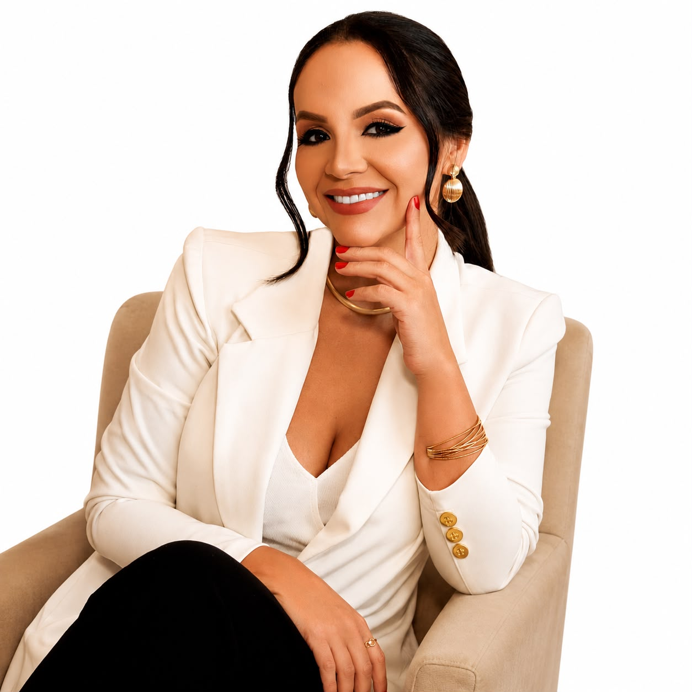
Como funciona o tratamento de canal
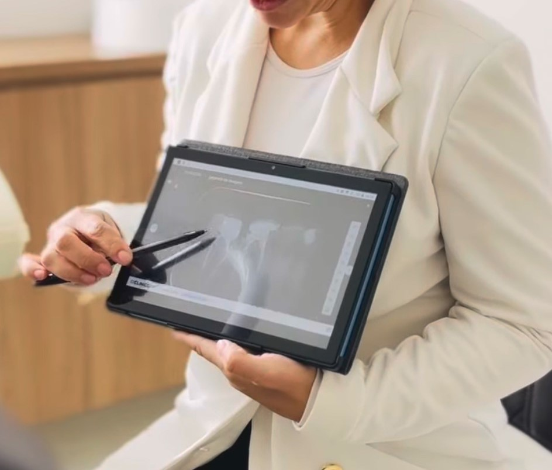
1Avaliação
Diagnóstico e planejamento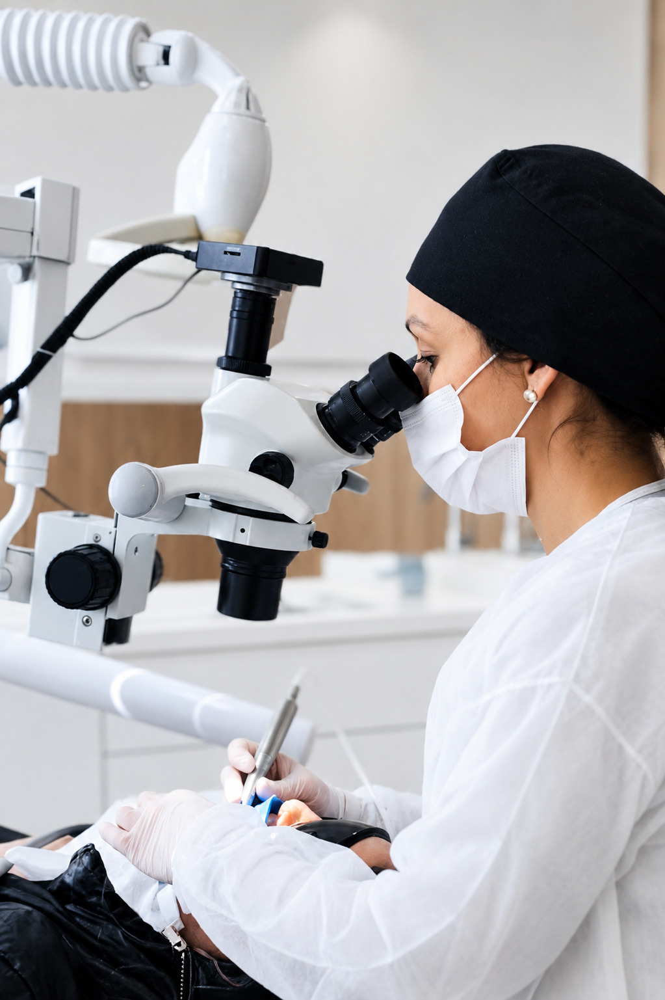
2Realização do tratamento de canal
Aplicação do protocolo Dra. Morgane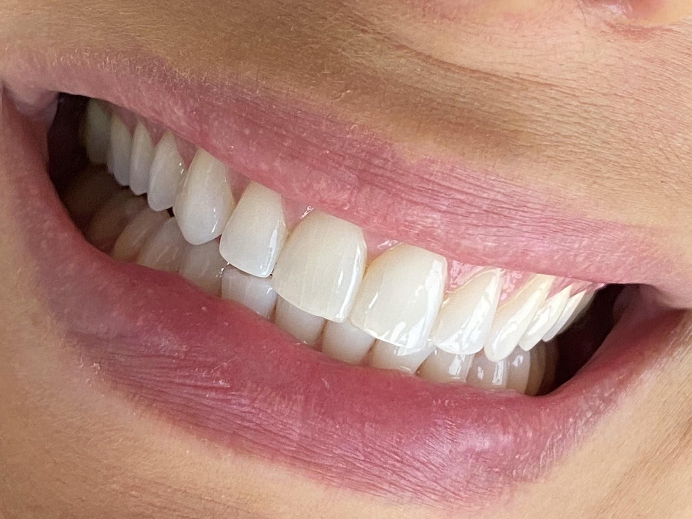
3Reabilitação
Seu dente 100% salvoDúvidas sobre como funciona o tratamento de canal?
Fale comigoUm protocolo exclusivo para transformar sua experiência com o tratamento de canal.
A Dra. Morgane Marion desenvolveu um protocolo que prioriza o conforto e o bem-estar do paciente, com foco em um tratamento sem dor, que pode ser realizado em uma única sessão, quando indicado, e com recuperação rápida. Além disso, possui experiência no acolhimento de pacientes que sentem medo ou ansiedade diante do tratamento de canal, oferecendo um atendimento humanizado, seguro e individualizado.
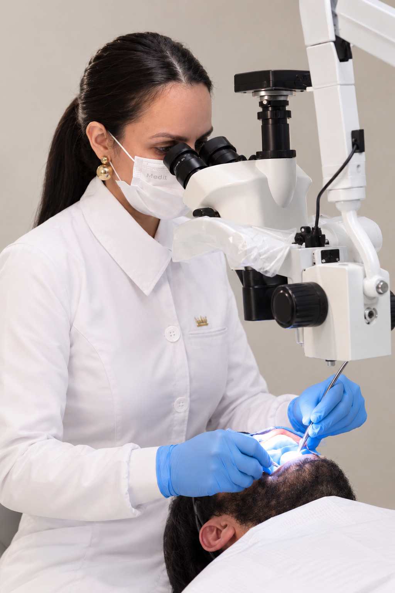
Contamos com tecnologia de ponta e equipamentos de alta precisão para realizar tratamentos endodônticos complexos
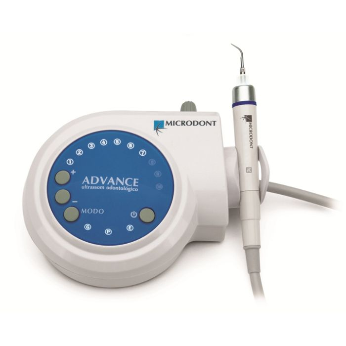
1Ultrassom
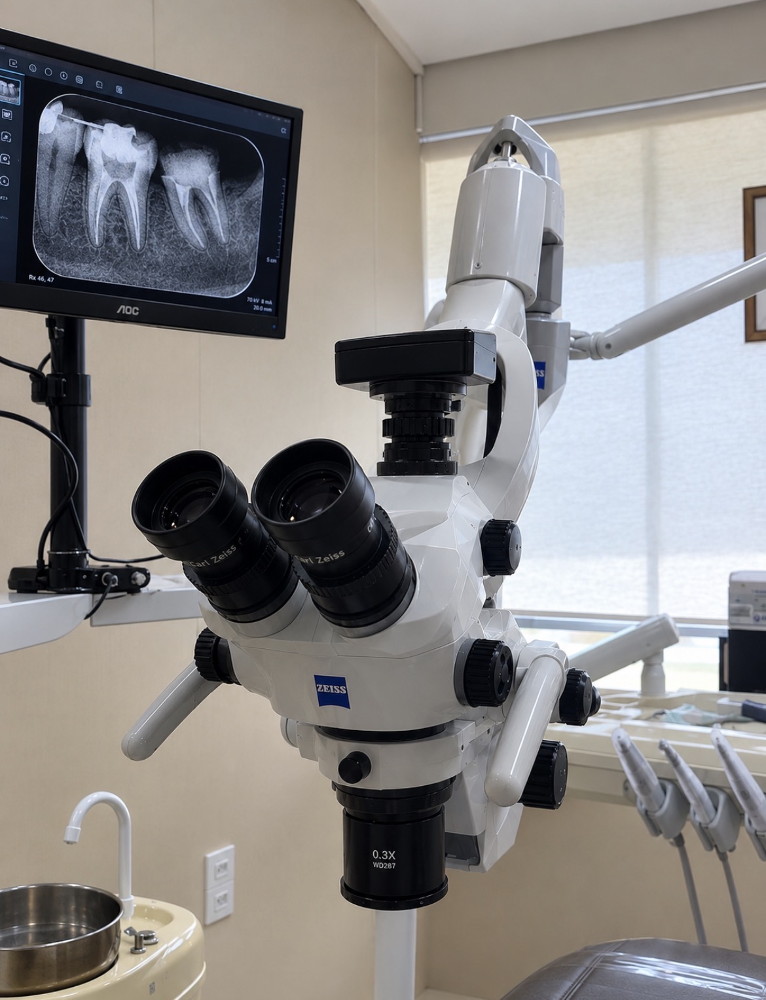
2Microscópio eletrônico
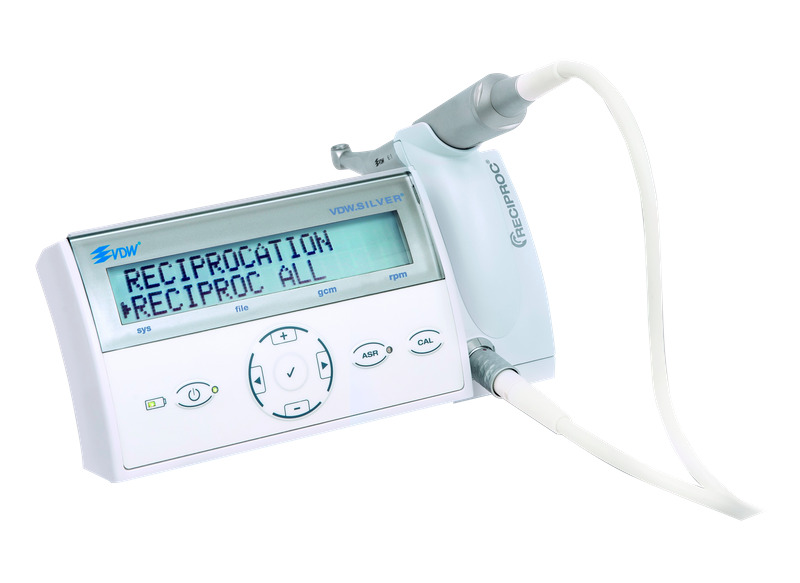
3Sistema mecanizado
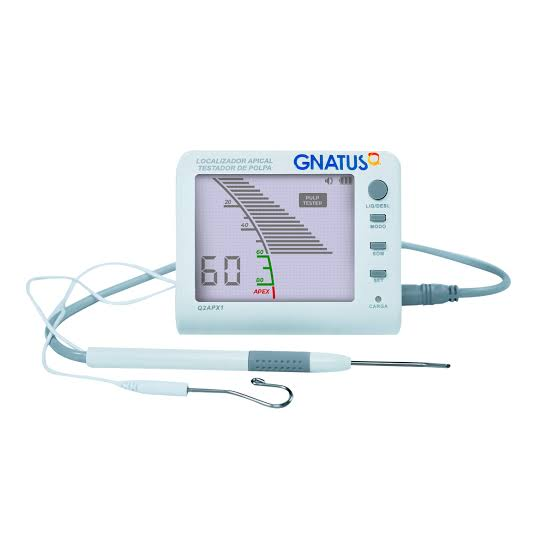
4Localizador apical
Conheça o nosso espaço
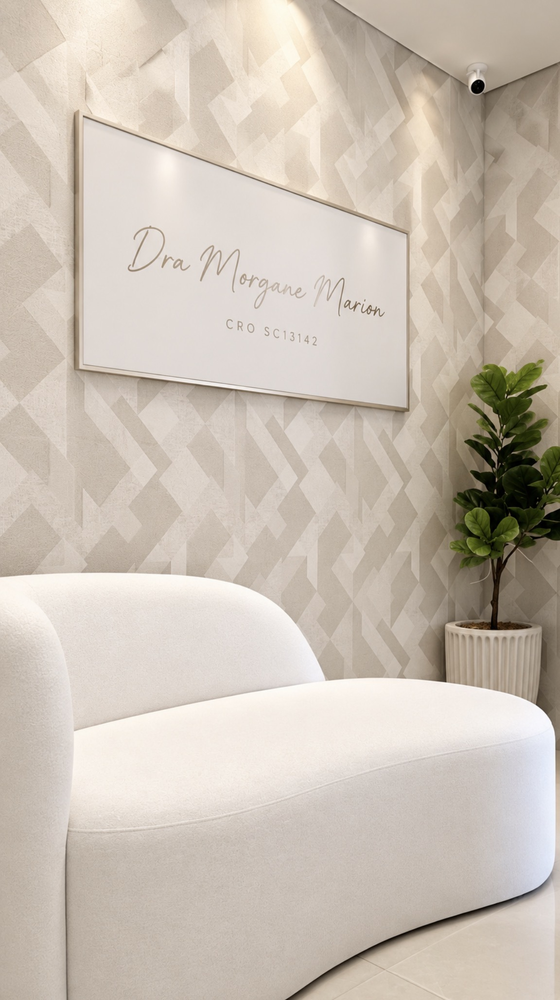
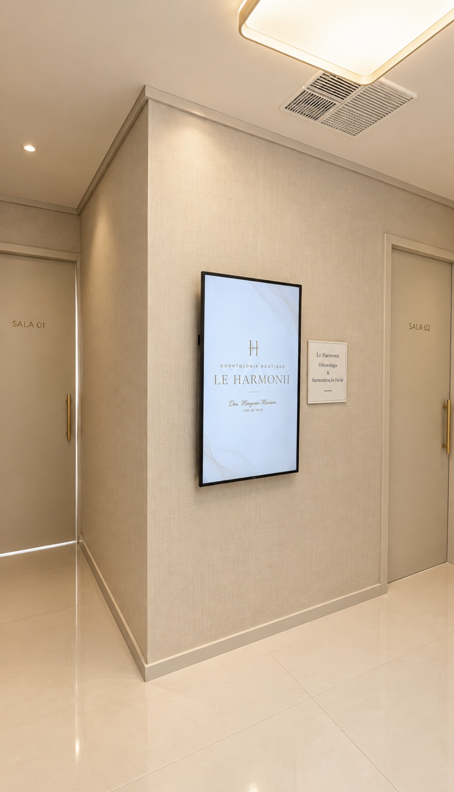
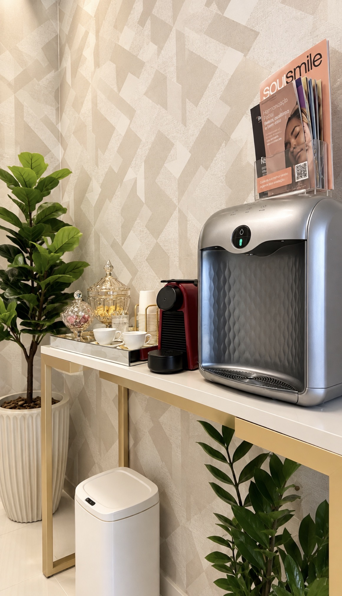
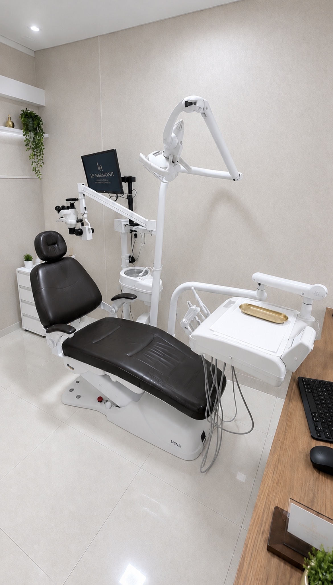
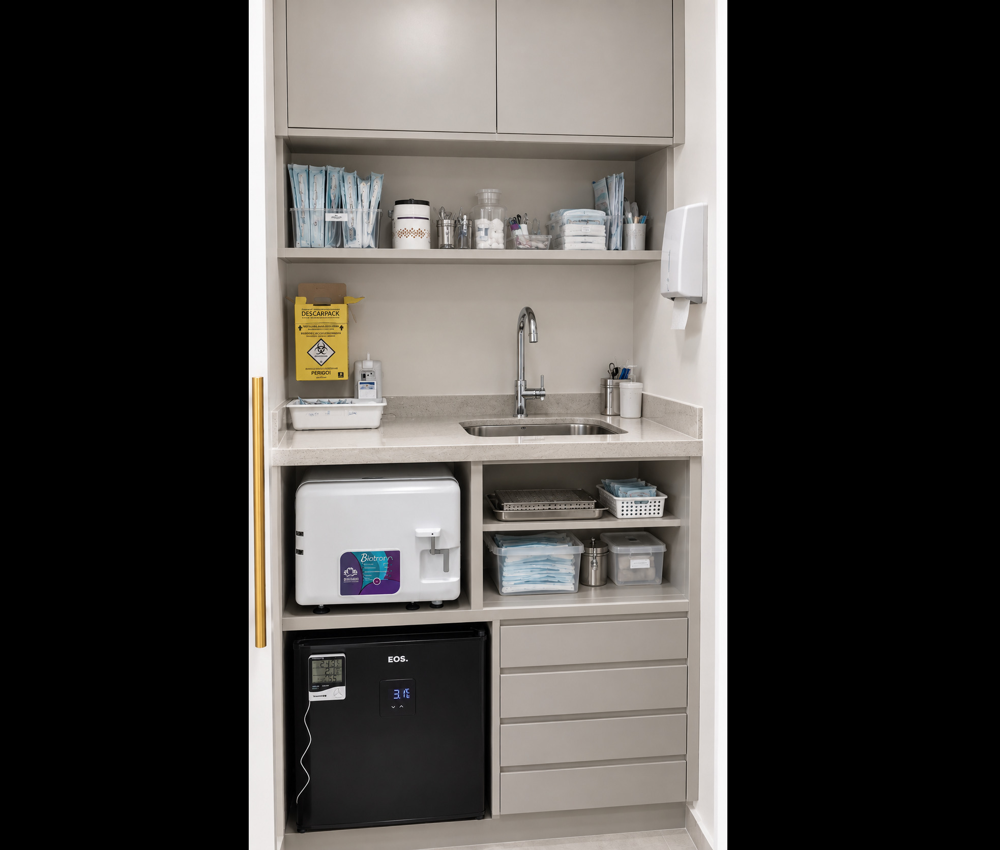
Depoimentos


O que é tratamento endodôntico
O tratamento endodôntico, conhecido popularmente como tratamento de canal, é um procedimento odontológico que trata inflamações e infecções na polpa dentária, o tecido localizado na parte interna do dente.
O tratamento consiste na remoção do tecido comprometido, na limpeza e desinfecção dos canais radiculares e, posteriormente, no seu preenchimento e selamento. O objetivo é eliminar a infecção, aliviar a dor e preservar o dente natural, evitando, sempre que possível, a necessidade de extração.
Acompanhe meu trabalho
Formas de Pagamento
Parcelamento em até 10 vezes sem juros no cartão
Como chegar
R. Dr. José de Patta, 50, Sala 03, Santa Mônica, Florianópolis – SC